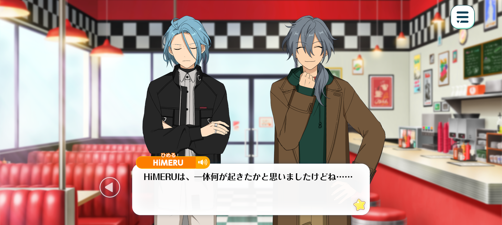
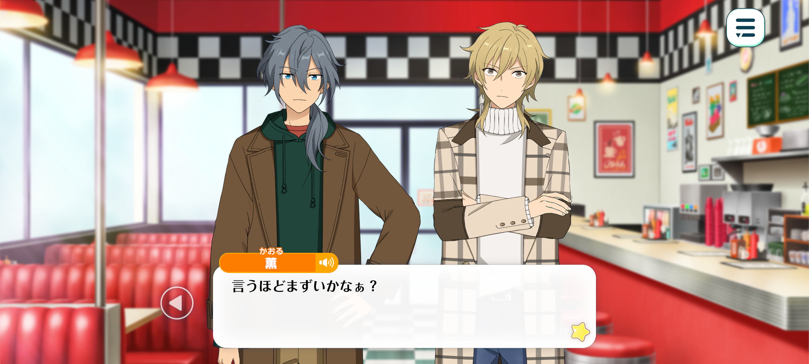
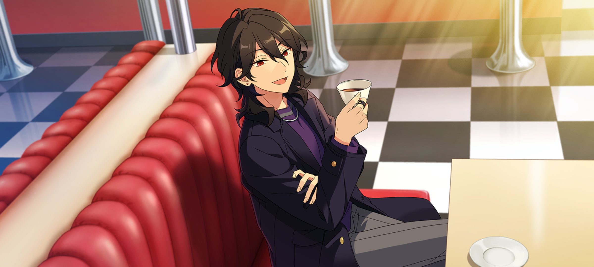

Scout! LUCKY SCRAMBLE
Fortunate Heartthrob – Chapter 7



Niki: I accidentally left both my wallet and my phone at home. I couldn't buy anything, and I was so hungry I couldn't even muster the strength to walk back...
While I was drifting in and out of consciousness, I heard a familiar voice...
I'm really glad I managed to grab HiMERU-kun's leg before I completely ran out of energy!
HiMERU: HiMERU was wondering what on earth had happened to you...
Kaoru: Seriously~. I looked down, and there was Shiina-kun, practically on death’s door.
Rei: ...That certainly took me by surprise as well. Though I'm equally astonished by just how much Shiina-kun can eat.
Niki: Really? But this is pretty normal for me!
I’m savouring every bite, so there’s no need to worry!
Rei: My goodness... Just watching you eat is enough to make me feel full.
Niki: Oh! Speaking of surprises, we should talk about HiMERU-kun! Did you see what was inside those lottery tickets?!
Usually, with these sorts of campaigns, you can win either a free item voucher or a discount coupon, right? And you'd expect to get discount coupons most of the time, wouldn't you? But—
Every single ticket HiMERU-kun opened had a free item voucher inside! With this many, he'd practically have an endless supply of fries!
HiMERU: It appears the redemption period hasn't started yet, so HiMERU cannot use them at present, Shiina.
Niki: Oh, really? Then I guess you’ll have to wait until next time for unlimited fries~! Ahh, what a shame...munch munch.
Kaoru: Again!? We really need to talk about this. There's no way you can call all of this anything other than incredible luck.
Rei: Indeed. Considering the extraordinary good fortune HiMERU-kun has enjoyed today, this is hardly surprising...
Niki: ? HiMERU-kun's good fortune?
Now that you mention it, why are you two hanging out with HiMERU-kun anyway? What a strange combination of people, huh?
Rei: Kukuku. It's quite a long story, but would you care to hear it?
Niki: Nah, I'm busy eating, so could you keep it short?
HiMERU: —HiMERU will explain. It's not particularly interesting, but..
Time: A few minutes later

Niki: Eeeh? Did all of that really happen?
Well, I get why you'd wanna skip town. You’d definitely be in a pickle if Rinne-kun got his hands on you.
Kaoru: Is he really as bad as you’re saying he is?
I mean, high schoolers can't enter pachinko parlours, and you have to be at least twenty to buy betting tickets... I'm sure there are plenty of other restrictions I'm forgetting, too.
Niki: People'll go to any lengths to get their hands on what they want.
HiMERU: And Amagi is one such person.
Niki: I'm sure he'd find some way to steal every last drop of HiMERU-kun's good luck!
Rei: ...I suppose I shan't comment on another person's affairs.
Niki: Nahaha! Maybe Rinne-kun just sneezed somewhere because we're talking about him~.
HiMERU: ...Shiina. You needn't share the coupons with anyone. You may have them all.
Niki: Eeeh!? Why!? Don't you want an unlimited supply of fries, HiMERU-kun!?
HiMERU: HiMERU is mindful of his carbohydrate and calorie intake. He would much rather Shiina enjoy them.
Niki: Thank you soooo much...! But, HiMERU-kun, you don't look particularly happy about winning all those prizes.
So many wonderful things have happened to you, but you don't seem excited in the slightest.
Kaoru: That's true~. HiMERU-kun has always been pretty cool and collected, hasn't he?
Niki: If someone told me I was the five-millionth visitor, I'd be over the moon! I'd be like, 'Seriously!? Are you for real?!'
And even if you weren't the type to react like that, surely you'd at least be happy to have everyone congratulating you and celebrating!
And best of all, you get all these free vouchers! Just thinking about having unlimited fries makes my heart race!
HiMERU: —If that makes Shiina happy, then HiMERU is happy.
Niki: ...Why'd you say HiMERU is happy instead of HiMERU is also happy? I want you to be happy, too.
HiMERU-kun, why isn't your heart racing with excitement?
Kaoru: ...I thought that was strange, too. But when I asked him about it, he wouldn't give me an answer.
Rei: Indeed. It was a little while ago, before we met Shiina-kun. Something about not having received the good fortune he was hoping for... or so he said.
Niki: So what kinda good luck are you even hoping for, HiMERU-kun?
HiMERU: …
—Allow HiMERU to give you a few examples.
Suppose that, on a day like today, HiMERU happened to find a hat that caught his eye. Or perhaps he stumbled across some particularly delicious coffee.
Rei: ?
Kaoru: ?
HiMERU: HiMERU would certainly be pleased by such things, just as Shiina suggested. HiMERU would be happy.
However, that's because HiMERU collects hats and enjoys drinking coffee.
They're things HiMERU likes. A good hat and delicious coffee.
What HiMERU means by good fortune isn't simply coming across something good. It's the things that align with HiMERU's own interests and preferences that bring him happiness.
Niki: ...Yeah? So, like, if someone who doesn't really like spicy food was told they could go to an all-you-can-eat buffet with nothing but super-spicy food, they wouldn't be happy, right?
Just because you've got a full belly doesn't necessarily mean you're happy, huh?
HiMERU: ...Fufu. That's a very Shiina-like way of putting it, but you're not entirely wrong.
If HiMERU were to encounter good fortune purely by chance, perhaps he would feel that he was lucky...
But there simply hasn't been enough time for something that would truly constitute good fortune to HiMERU to happen.
The day HiMERU encounters such fortune may yet be today.
Kaoru: ...I've never really thought about it that way before. Even though you’re younger than us, you certainly have a rather mature way of looking at things.
Though I only came along because I was curious to see what would happen, I ended up making you uncomfortable. Sorry if I was a nuisance.
HiMERU: Please don't think that way. HiMERU was glad that everyone was happy for him. After all, HiMERU wasn't exactly doing much to liven things up himself.
—Besides, even if HiMERU didn't encounter the good fortune he was hoping for, perhaps today wasn't so bad after all.
Rei: Oho?
HiMERU: There were moments when HiMERU's senpais seemed genuinely happy and were enjoying themselves. HiMERU was also able to make Shiina happy.
Wherever HiMERU went, there were people celebrating him. Everyone had smiles on their faces.
Being able to make others smile... That's what makes HiMERU happy as an idol.

Rei: Kukuku... What an elegant way to bring this conversation to a close, hm?
Even after all this, I'm still not entirely sure what good fortune means to HiMERU-kun.
Still, it's lovely to hear that what brings him happiness as an idol is seeing the smiles of those around him ♪.